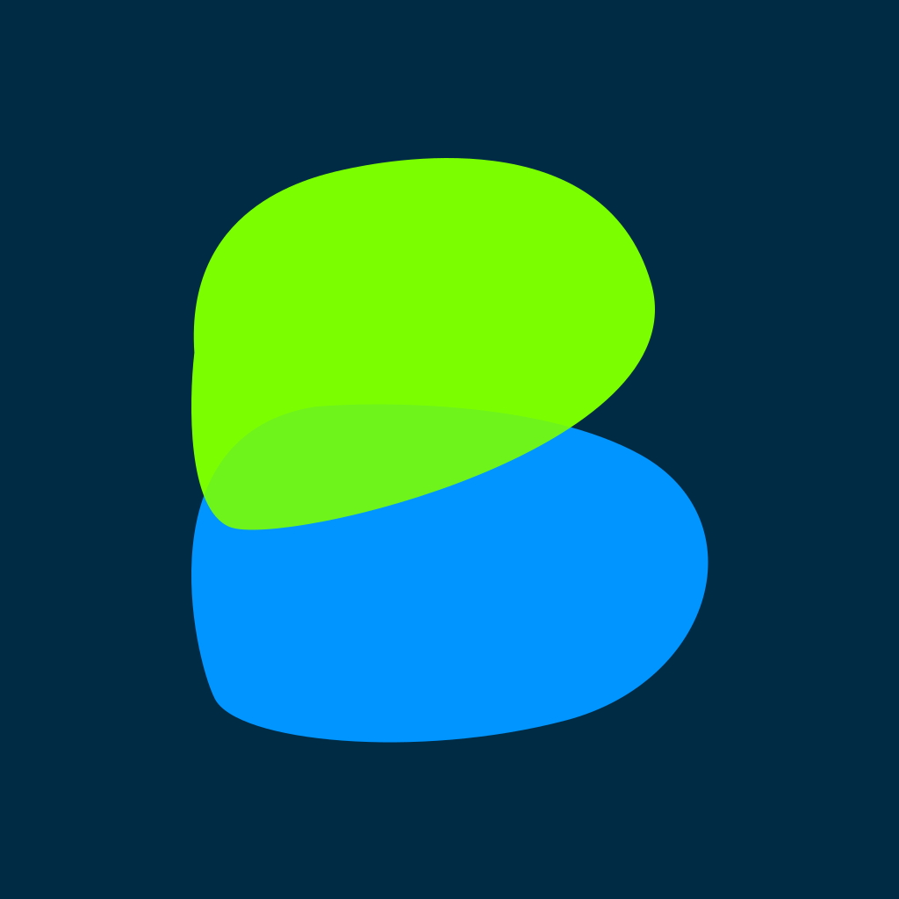
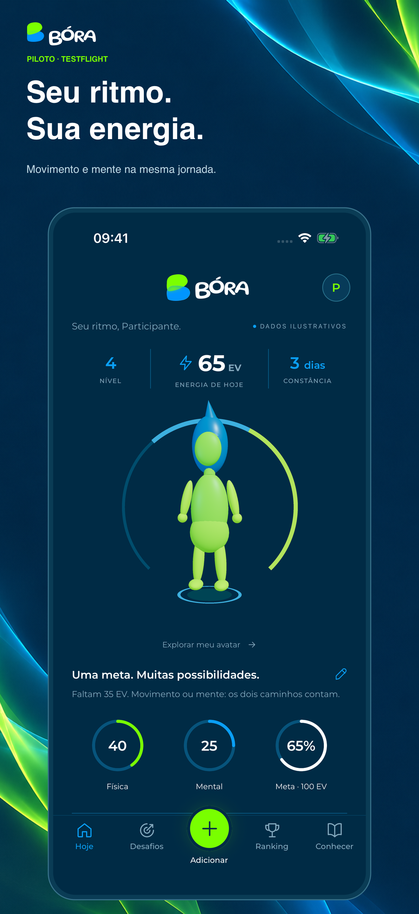
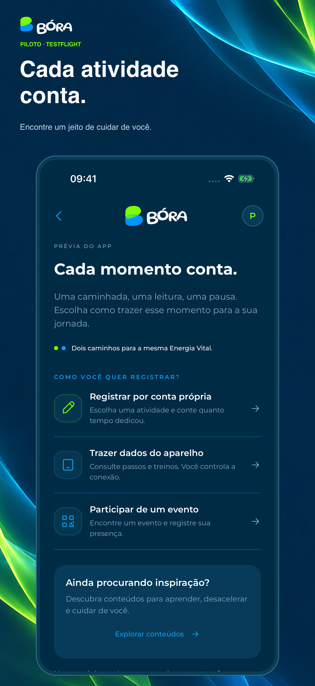
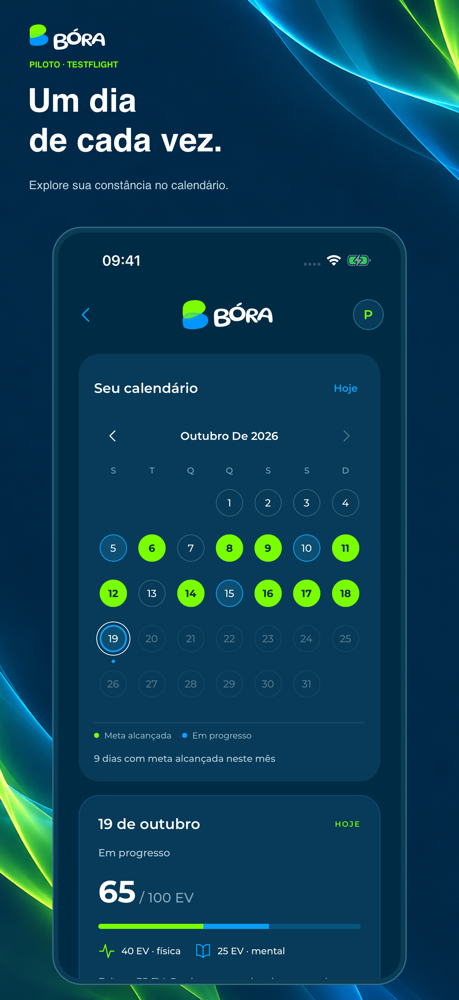
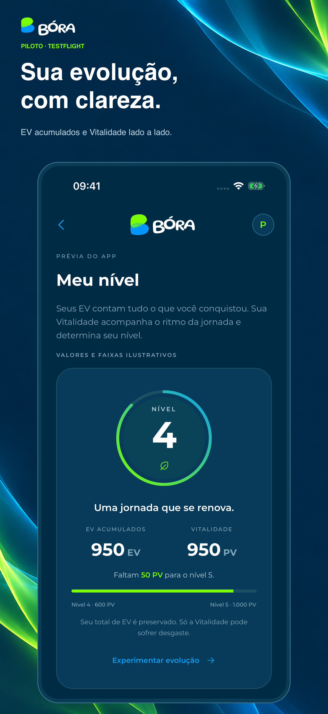
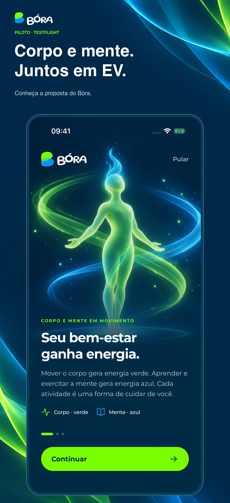
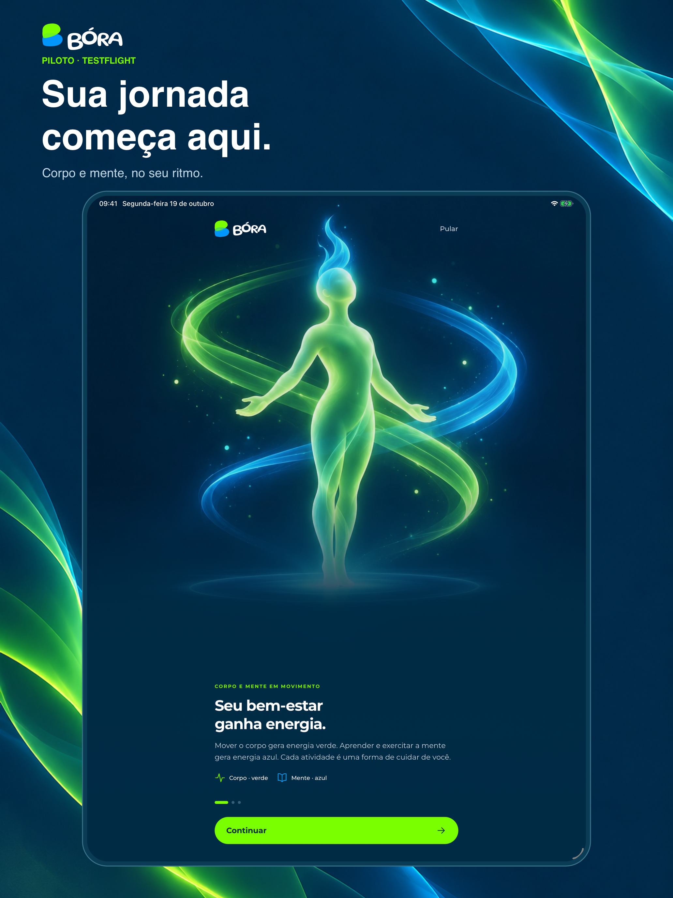
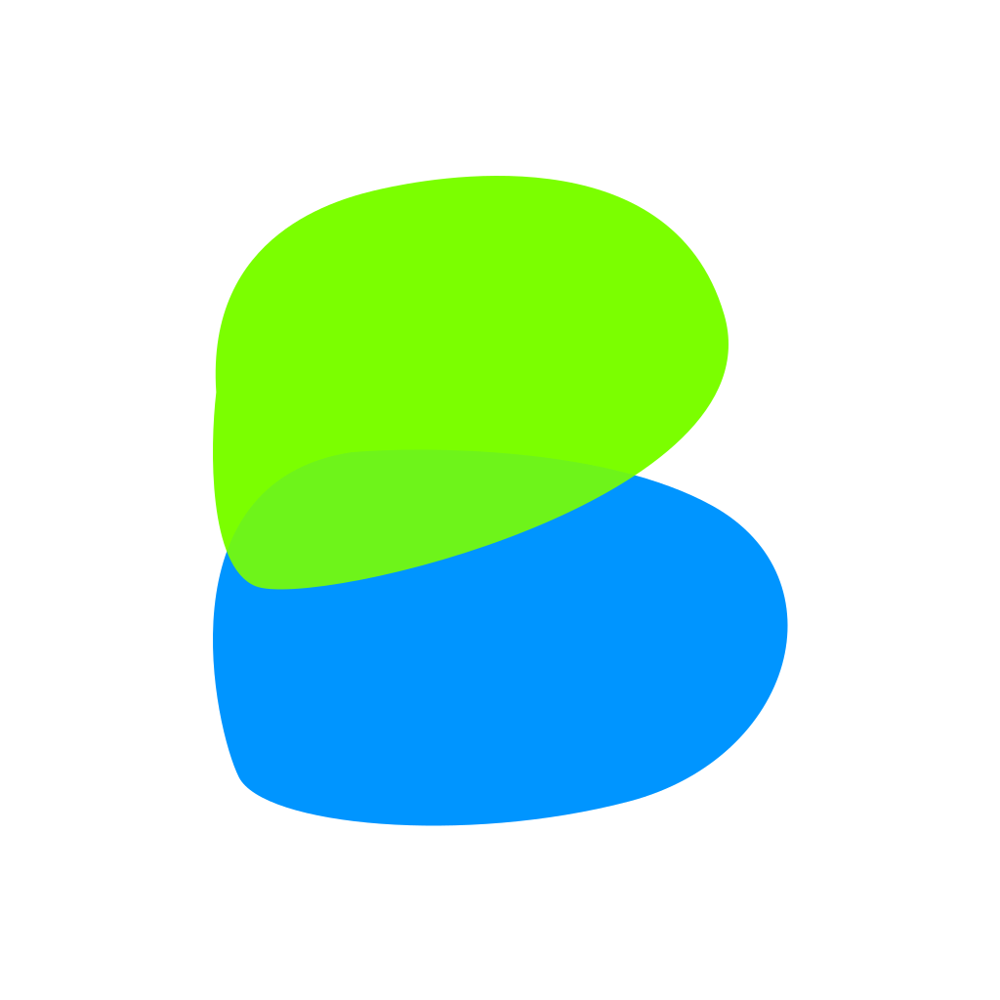

Nibilabs · imagens, ícones e textos · português do Brasil
Capturas reais do aplicativo, com os valores de demonstração preservados. Clique nas peças para abrir os PNGs em tamanho integral.

1206 × 2622 px





2064 × 2752 px

1024 × 1024 px, sem transparência. O símbolo original foi preservado.
Contato informado: suporte@nibilabs.com. Nome e telefone da pessoa responsável pela revisão ainda precisam ser preenchidos.